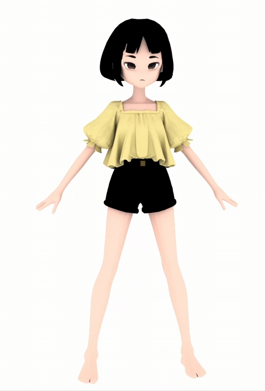
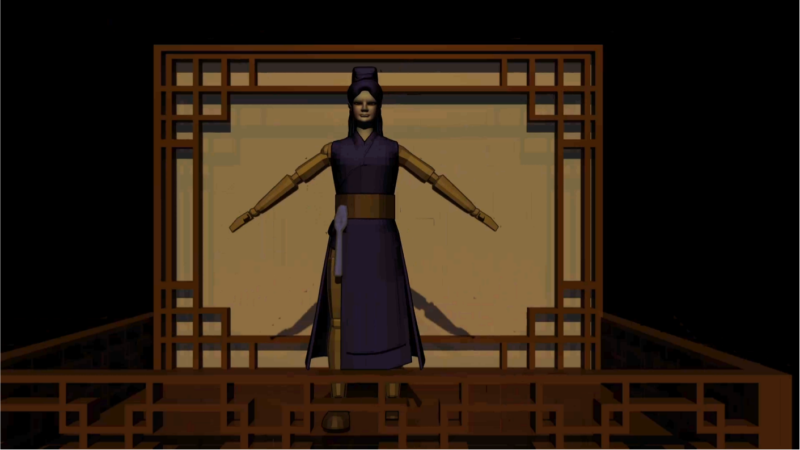
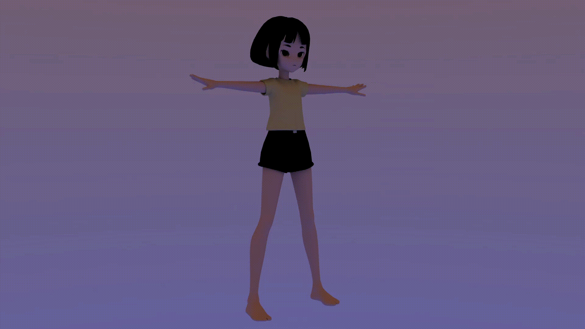

01 / 3D Animation
The Rift Park
A study of changing materials, movement and spatial transformation. The sequence below records the simulation as an animation.
Animation study. The evolving scene is presented as one continuous moving-image work.
An archive of imagined worlds, interactive systems, moving images and visual stories.
Practice, background and contact.
Quella works across game design, 3D animation, web interfaces and visual storytelling. Her practice brings together atmospheric environments, interactive experiences and narrative images.
Explore work by discipline. Animation, games and interface projects, each with its own documentation.
A study of changing materials, movement and spatial transformation. The sequence below records the simulation as an animation.
Animation study. The evolving scene is presented as one continuous moving-image work.
An animated short in development, exploring a puppet-like character and the visual language of control. These images show character, stage and poster development, followed by an animation test.

Character study. The protagonist's form establishes the film's visual direction.

Puppet study. A front view of the character and its theatrical references.

Turnaround. A short movement study of the character.

Poster. The project's key visual.
Animation test. An early moving-image exploration of the film.
A game project featuring a maze world. My contributions include level design and implementation, as well as the promotional poster.

Poster design. The promotional image introduces the game's world.
Gameplay trailer. A look at the maze level in motion.
A compact interactive experiment set around a floating computer on an animated sea. The participant enters a programming space where input, interpretation and audiovisual response form a loop.

Scene and interface concept. The floating computer sits beyond the ornate frame, while the right side introduces the project's title and menu. Gameplay documentation will follow as the experiment develops.
A narrative exploration and puzzle game about memory, belief and the stories that shape a sense of self. The player follows traces through dream spaces and a lakeside landscape.
Gameplay footage and project images will be added as development progresses.
A website interface concept and visual identity developed through a Figma prototype and design studies. Open Figma design ↗

Interface poster. A visual introduction to the website concept.

Web concept. An exploration of layout, typography and interaction.
Storyboards, scripts and illustrations collected by format.
Visual planning for scripts, shot sequences, a music video and a book adaptation.

Script structure. An overview of narrative development.

Storyboard. Shot-by-shot visual planning.

Music video storyline. A sequence of narrative beats.

Adaptation treatment. A script development document.
A selection of character, scene, cover and thematic illustration work.

Character design study.

Scene illustration.

Book cover design.

Thematic illustration.
Experiments in environment, lighting and atmosphere across cave, historical-inspired and snowy settings.

Cave. An interior environment and lighting study.

Historical-inspired setting. An architectural and atmospheric study.

Snow. A landscape study in light and mood.
Independent moving-image and interactive studies.
A visual and technical experiment in Unreal Engine.
An experimental portrait-based interaction study.
An experiment connecting visual response and music.
Notes, essays and reflections on the creative process.